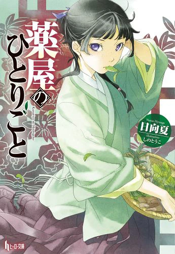

薬屋のひとりごと（１６）
著者：日向夏（ひゅうが なつ）
第16巻発売日：
概要：疱瘡の流行が広がるなか、猫猫は感染拡大を食い止める手がかりを探る。

日向夏さんの小説『薬屋のひとりごと』を、巻ごとにまとめています。
著者：日向夏（ひゅうが なつ）
文庫：ヒーロー文庫
第1巻発売日：2014年8月29日
概要：薬師の猫猫（マオマオ）が、薬と毒の知識を頼りに後宮や宮廷の謎を解く宮廷ミステリー。
著者：日向夏（ひゅうが なつ）
第16巻発売日：
概要：疱瘡の流行が広がるなか、猫猫は感染拡大を食い止める手がかりを探る。
著者：日向夏（ひゅうが なつ）
第15巻発売日：
概要：羅門のもとで投薬実験に加わった猫猫は、実験の目的と復元された医学書の記述に疑問を抱く。
著者：日向夏（ひゅうが なつ）
第14巻発売日：
概要：宮廷で派閥争いが深まるなか、猫猫は「名持ち」の会合に出席し、辰の一族の家宝をめぐる謎に出会う。
著者：日向夏（ひゅうが なつ）
第13巻発売日：
概要：西都から中央に戻った猫猫は、かつての仕事に復帰し、壬氏の思いに向き合う。
著者：日向夏（ひゅうが なつ）
第12巻発売日：
概要：壬氏が西都の政務を担うことになり、猫猫たちは領主代行の後継者をめぐる争いに巻き込まれる。
著者：日向夏（ひゅうが なつ）
第11巻発売日：
概要：大蝗害で食糧不足と混乱が広がる西都で、猫猫と壬氏はそれぞれの立場から難局に向き合う。
著者：日向夏（ひゅうが なつ）
第10巻発売日：
概要：西都に着いた猫猫は農村を訪れ、かつての大蝗害を生き延びた老人に出会う。
著者：日向夏（ひゅうが なつ）
第9巻発売日：
概要：壬氏の傷をひそかに治療する猫猫は、養父の羅門に医術を教わろうと決める。
著者：日向夏（ひゅうが なつ）
第8巻発売日：
概要：羅漢の教本をきっかけに宮中で囲碁が流行し、大会の計画を知った壬氏は羅漢との交渉に乗り出す。
著者：日向夏（ひゅうが なつ）
第7巻発売日：
概要：医官付きの官女となった猫猫は、新しい職場で医官たちや同僚の姚と関わっていく。
著者：日向夏（ひゅうが なつ）
第6巻発売日：
概要：西都で壬氏から求婚された猫猫は、互いの立場を考えながら、ある決断を下す。
著者：日向夏（ひゅうが なつ）
第5巻発売日：
概要：毒菓子事件が起きるなか、猫猫は壬氏の命で西都へ向かい、舞踏会に潜む陰謀に出会う。
著者：日向夏（ひゅうが なつ）
第4巻発売日：
概要：里樹妃が見た幽霊の噂を調べる猫猫は、後宮で起きた事件に共通点があることに気づく。
著者：日向夏（ひゅうが なつ）
第3巻発売日：
概要：玉葉妃のもとに戻った猫猫は、妃の死や先帝の呪いを調べるうちに、壬氏をめぐる謎に近づく。
著者：日向夏（ひゅうが なつ）
第2巻発売日：
概要：壬氏のもとで外廷に勤めることになった猫猫は、宮廷で相次ぐ不可解な事件に挑む。
著者：日向夏（ひゅうが なつ）
第1巻発売日：
概要：後宮で下働きをする猫猫は、皇帝の御子たちが相次いで衰弱する原因を調べ始める。